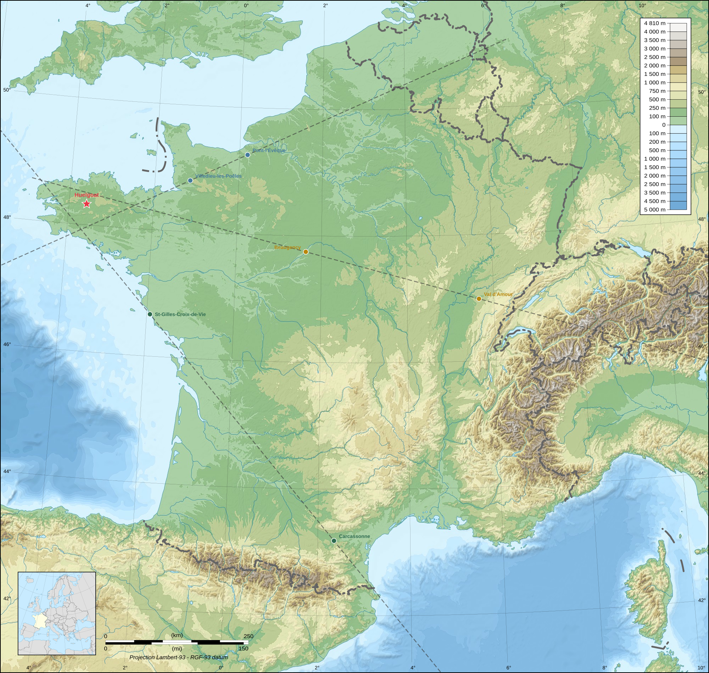
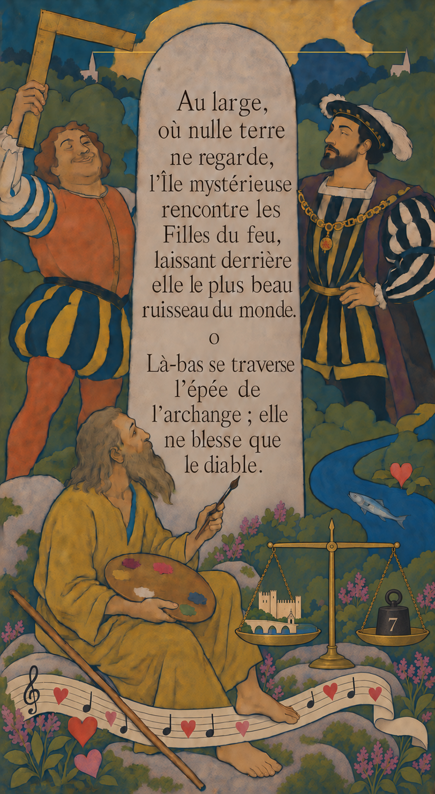

Le Jade et le Granit
La chasse est terminée. Tout est dévoilé ci-dessous, du premier vers au dernier mot du sceau. Si vous cherchez encore pour le plaisir, fermez cette page.
This page is in French only. The hunt was built to be solved in French, and so is its solution.
Sept chants. Chacun se lit trois fois, et chaque lecture donne autre chose : le titre apparie, la première strophe cache une cité, la seconde donne un pas sur le terrain. Voici les trois lectures, dans l'ordre.
Six poèmes numérotés, une finale. Les poèmes sont en prose brève, à la manière des Stèles de Victor Segalen : deux blocs séparés par un petit « o », des impératifs qui ordonnent, des mots à majuscule qui pèsent, une chute d'une ligne. Le « o » n'est pas un ornement : c'est la charnière entre les deux lectures.
On les appelle ici des chants, et c'est le mot du jeu lui-même, pris à la finale, « six chants taisent six cités ». Segalen, lui, n'a jamais écrit de chants : il écrivait des stèles.
La finale, Cycle, dit comment assembler le reste. Elle cache une cité elle aussi, la septième, celle où l'on se rend, mais par un tout autre mécanisme que les six premières.
Chaque titre est un livre, choisi parmi les moins lus de son auteur, et respectant le lipogramme de son poème. Aucun ne désigne un lieu : leur fonction est d'apparier. Trois encres, trois paires. Mais chacun, discrètement, évoque aussi le poème qu'il coiffe.
| L'encre | Chant | Le titre | Ce qu'il évoque, en plus |
|---|---|---|---|
| Verne | I | Les Frères Kip | des frères, tout simplement : le poème en met deux |
| III | Le Château des Carpathes | une muraille, une cité fortifiée | |
| Huysmans | II | La Cathédrale | des cloches, et la cité du poème les coule |
| IV | En route | une route : celle qui court entre deux clochers | |
| Nerval | V | Sylvie | Perec : l'héroïne des Choses s'appelle Sylvie |
| VI | Aurélia | l'or, par où s'ouvre le rébus du poème |
Le septième titre, Cycle, est le seul qui ne soit pas un livre : c'est la consigne.
Sous chaque première strophe dort une ville. Elle ne sert jamais à marcher : c'est un point de visée.
Deux frères, tels les enfants de Léda, se partagent déjà le Départ. L'aîné a pris le filet de lumière qui se reflète sur les bancs de la Vie. Le cadet n'a gardé que les ténèbres au creux de lui.
C'est écrit — on a forgé ce dont le Géant avait besoin. Retiens celle à ne jamais rien entendre. Elle excelle à résonner.
Gabriel sait où aller — il l'a toujours su. Lui seul lit le ciel ; qui l'écoute obéit. Il bat midi.
Au-delà, celle-là aussi. Là-bas, le même geste se répète — plus vieux, plus faible, mais fidèle.
L'onde file dessous ; le pied se tient dessus. Le silence ici est vieux : ne le trouble point.
L'on rumine entre les rivières ; le Pieux en tire ce qui coule et fond sous le doigt.
Georges a déjà tout dit, sauf la plus facile. Il a fait mille fois plus gros qu'ici. Pas de zéphyr sur ce kilt de tweed.
Seule cité à ne pas être cachée dans son propre texte : cette strophe donne une consigne, et cette consigne vaut pour les six poèmes.
| Chant | Le titre | Lettre absente |
|---|---|---|
| I | Les Frères Kip | O |
| II | La Cathédrale | U |
| III | Le Château des Carpathes | N |
| IV | En route | A |
| V | Sylvie | N |
| VI | Aurélia | S |
Ni ce qui verdoie ; ni ce qui dort au fond du Rhin, ni ce qui vient de l'autre rive. Ni l'air où rien ne vit, ni le dur qui brille ; ni ce qu'au hameau du nord on découvre encore.
Rien de cela n'y luit.
Six images, six symboles chimiques, dans l'ordre du texte.
| ce qui verdoie | l'émeraude, le béryl | Be |
| ce qui dort au fond du Rhin | l'or du Rhin | Au |
| ce qui vient de l'autre rive | l'Allemagne | Ge |
| l'air où rien ne vit | l'azote, a-zoê | N |
| le dur qui brille | le diamant, carbone | C |
| au hameau du nord | Ytterby, l'yttrium | Y |
« Rien de cela n'y luit » : la strophe énumère six choses pour dire qu'aucune n'est là. Il ne reste que leurs initiales.
Les six cités sont là, et rien ne dit encore quoi en faire. C'est la finale qui donne la consigne, en une phrase.
Six chants taisent six cités ; trois encres les ont signés. Ce qu'une même encre écrivit deux fois, relie-le d'un trait.
Les deux poèmes d'un même auteur vont ensemble, et l'on relie leurs cités d'une droite, prolongée bien au-delà des deux villes.
| Encre | La droite | Écart au lieu |
|---|---|---|
| Verne | Saint-Gilles-Croix-de-Vie ↔ Carcassonne | 28 km, à l'ouest |
| Huysmans | Villedieu-les-Poêles ↔ Pont-l'Évêque | 38 km, au sud |
| Nerval | Ounans ↔ Beaugency | 24 km, au nord |
Distances perpendiculaires du lieu final à chaque droite, mesurées en Lambert-93. Aucune des trois ne touche le lieu : c'est précisément ce qui le désigne.

Le centre du triangle formé par les trois droites tombe à 6,9 km de Huelgoat. Sur une carte de France, c'est un doigt posé dessus. Mais un centre de triangle désigne un bout de Bretagne intérieure, pas un rocher.
C'est la finale qui nomme, par un tout autre chemin.
Un prophète est venu ici, seul. Il n'annonça rien — ce qu'il vit lui suffit.
Prophète se dit nabi, et les Nabis étaient des peintres. Le premier d'entre eux, Paul Sérusier, a peint dans ce chaos de granit un tableau qu'il a appelé Solitude. Chercher où il l'a peint donne Huelgoat par son nom, sans tracer une seule droite. Le prophète n'annonce rien, il voit : c'est un peintre, et le mot n'est jamais écrit.
Un faux ami au passage : le barycentre des six villes, lui, tombe 390 km plus loin, vers la Loire. C'est le centre du triangle qui vise, jamais celui des villes.
Après le « o », chaque poème donne un pas sur le terrain. Mis bout à bout, dans l'ordre des chants, ils font le parcours dans la forêt de Huelgoat.
Le parcours, dans l'ordre, avec les numéros du plan officiel des circuits de Huelgoat : le Champignon (1), le Ménage de la Vierge (5) au levant, le Camp d'Artus (9) au nord, la rue du Docteur Jacq entre l'église et la chapelle, le Vieux Pont Rouge (6) sur la Rivière d'Argent, et la Stèle de Victor Segalen (12), au-dessus du Gouffre (10).
Un marcheur s'est assis là pour ne plus revenir. Pèse les six, lettre à lettre ; compte à rebours les pierres qu'il laissa.
Peser une cité, c'est compter ses lettres. Lettres seules, sans traits d'union ni apostrophes.
| Saint-Gilles-Croix-de-Vie | 21 |
| Villedieu-les-Poêles | 18 |
| Carcassonne | 11 |
| Pont-l'Évêque | 11 |
| Ounans | 6 |
| Beaugency | 9 |
| Somme | 76 |
Vienne cette heure renversée, la Douzième : son moment, qu'il me sera doux !
À l'envers de ma nature les désirs alors agiront :
Peut-être alors me sentirai-je bon parmi les principes à l'envers ?
La cinquante-troisième stèle, À l'envers.
Le poème ne se contente pas de porter ce titre : il dit la Douzième, puis « à l'envers de ma nature », puis « les principes à l'envers ». Trois fois en trois lignes. Qui arrive là ne peut plus douter de son compte. Et « la Douzième » répond à « il bat midi », six chants plus haut.
La phrase trouvée n'est pas la réponse : c'est la clé. Le bloc chiffré publié en bas de la page des énigmes était le dernier verrou.
BRM NPIWLW YC KQSNIT : KEAMCLEH QS DLRVE, DWGAEAI PWJ WWEW, FK IM UVVXAH. MWEAYVIC, TM RA LSXL WF VVHOEESQV : LD VWO GMPN.
« J'ai scellé un coffre : sapèques de Chine, monnaie des îles, or et argent. Voyageur, tu as tout su renverser : il est tien. »
Le texte déchiffré ne décrit pas le trésor : il le liste. Douze pièces, et chaque terme du sceau en désigne un lot.
| Ce que dit le sceau | Ce qu'il y a dans le coffre | Pièces |
|---|---|---|
| sapèques de Chine | sept sapèques au trou carré, le cycle chinois | 7 |
| monnaie des îles | deux monnaies de Polynésie française, le cycle polynésien | 2 |
| or | un panda d'or, un gramme | 1 |
| argent | un panda d'argent de trente grammes, et la Semeuse | 2 |
Deux stances ont été publiées en cours de route, quand les cités ont commencé à sortir. Elles ne nomment rien et ne valident que par recoupement.
Au large, où nulle terre ne regarde, l'Île mystérieuse rencontre les Filles du feu, laissant derrière elle le plus beau ruisseau du monde.
o
Là-bas se traverse l'épée de l'archange ; elle ne blesse que le diable.

| Sur le panneau | Ce que la figure recoupe |
|---|---|
| La sardine d'argent, dans la rivière | Saint-Gilles-Croix-de-Vie |
| Le géant de Rabelais | Villedieu-les-Poêles |
| L'équerre du géant | l'angle droit du chant III : Villedieu vers Paris, puis Paris vers Carcassonne |
| Le roi, au bord de son ruisseau | la Charente |
| Les cœurs, posés sur la portée | Ounans, et la vieille chanson du Val d'Amour |
| Les deux clochers, joints d'un trait | les deux édifices religieux de Huelgoat, à joindre ; et la ligne de saint Michel |
| La balance à l'équilibre | peser une cité, c'est compter ses lettres : Avignon vaut 7 |
| Le peintre vêtu en prophète | le nabi, et son tableau |
| Le granit | la Bretagne, et le titre du jeu |
Victor Segalen, né à Brest en 1878, mort le 21 mai 1919 dans la forêt de Huelgoat. Médecin de marine, poète, sinologue, archéologue. Il a écrit en Chine un recueil de soixante-quatre poèmes taillés comme des inscriptions sur pierre, Stèles. Il n'est nommé nulle part dans les sept chants, et pourtant il y est d'un bout à l'autre.
Des blocs de prose brève séparés d'un « o », des impératifs, des Concepts à majuscule, une chute d'une ligne. La stèle, chez lui, est une pierre qui parle à la première personne et qui regarde dans une direction : ses six sections sont orientées, face au Midi, du Nord, de l'Orient, de l'Occident, du Bord du chemin, du Milieu.
Deux pierres, et c'est une biographie : le granit de Brest où il naît, le jade de la Chine où il écrit, le granit de Huelgoat où il meurt. Personne ne peut lire le titre avant d'avoir fini. Il a été choisi aussi pour ne rien trahir : cherché dans Stèles, « jade » ne mène qu'à deux poèmes inoffensifs, Jade faux et Éloge du Jade.
« Deux frères, tels les enfants de Léda, se partagent déjà le Départ. » Cette majuscule n'est pas une coquetterie : Départ est un poème de Stèles. La toute première phrase du jeu porte déjà le nom d'une stèle, posée là comme une signature au dos d'un tableau.
Midi sert au mécanisme, mais midi est aussi la douzième heure, et la première section de Stèles s'appelle Stèles face au Midi. Le compte final tombe sur la douzième stèle depuis la fin, et la stèle atteinte nomme elle-même « la Douzième ». Trois fois le même nombre, à trois endroits qui ne se parlent pas.
Le 21 mai 1919, on le retrouve assis au-dessus du Gouffre, dans un creux de verdure, son manteau plié sous lui, la vareuse de marine ouverte. Un pied déchaussé, la cheville entaillée, un mouchoir sanglant autour, un gobelet d'eau posé près de lui pour laver la plaie. « Ce regard au pied » n'est donc pas une figure de style : c'est le regard, et c'est le pied.
Le tableau de Sérusier s'appelle Solitude. Mais quand Yvonne est venue chercher son mari, elle a su où aller sans chercher : c'était l'endroit où tous deux avaient trouvé, disait-elle, la solitude la plus inaccessible. Un tableau et une veuve emploient le même mot pour le même bout de forêt.
Trois sens dans un mot. La consigne : le comptage est circulaire, il dépasse soixante-quatre et repart de la fin. La relecture : il faut reprendre les six chants en boucle. L'œuvre : c'est ainsi qu'on range Segalen depuis toujours, le cycle chinois, le cycle polynésien, le cycle archéologique.
Les sapèques pour la Chine et les Stèles. Les monnaies de Polynésie pour Les Immémoriaux, et pour 1903, l'année où il débarque à Tahiti et où meurt Gauguin, dont il rachètera les effets aux Marquises. Le granit pour la Bretagne du début et de la fin.
Un joueur pouvait résoudre la chasse entière sans jamais lire une ligne de lui. Il aura tout de même suivi son chemin.